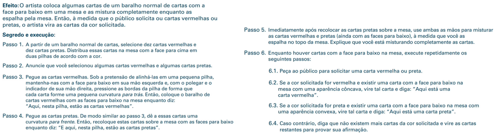
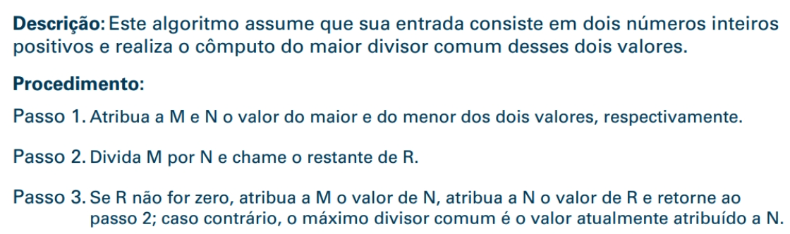
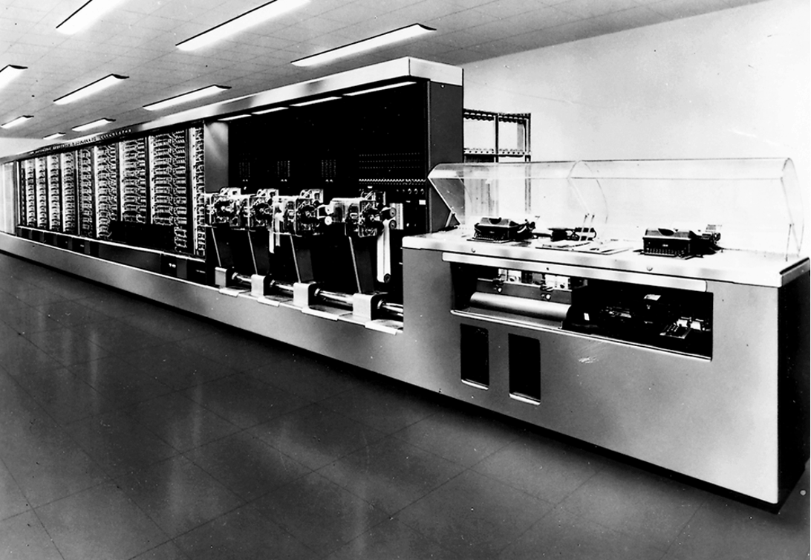
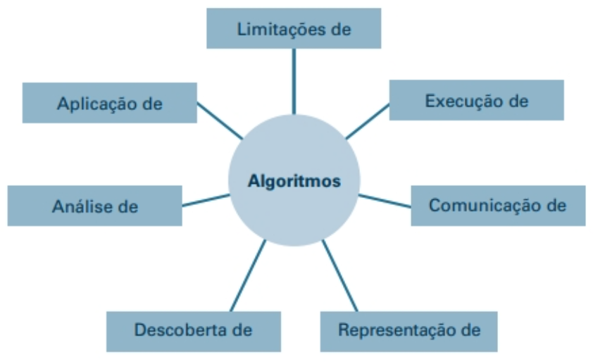
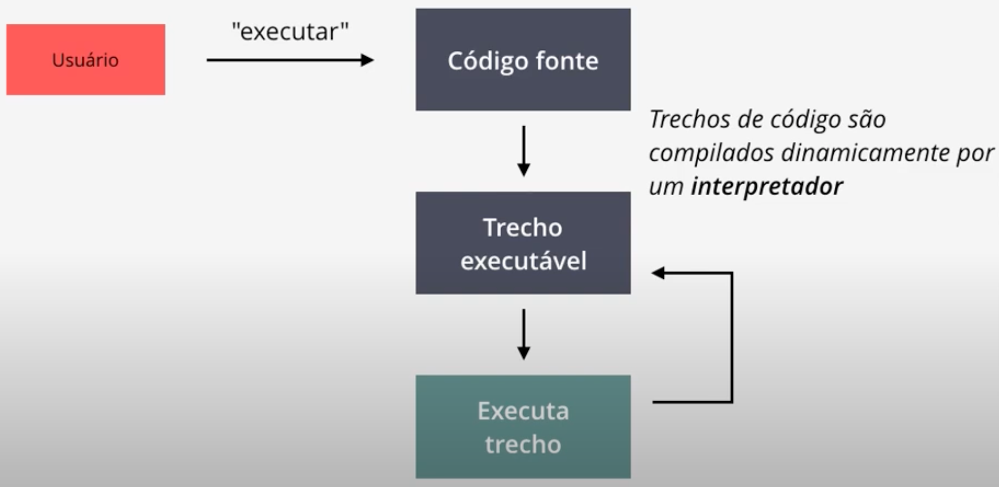
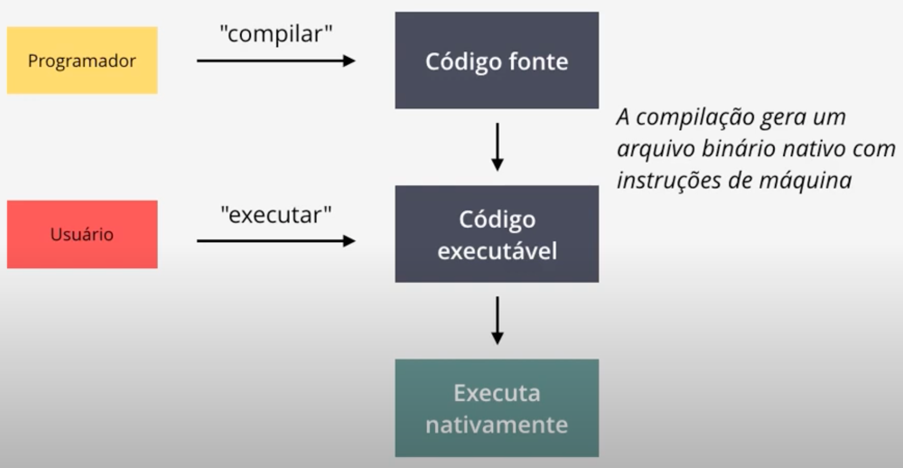
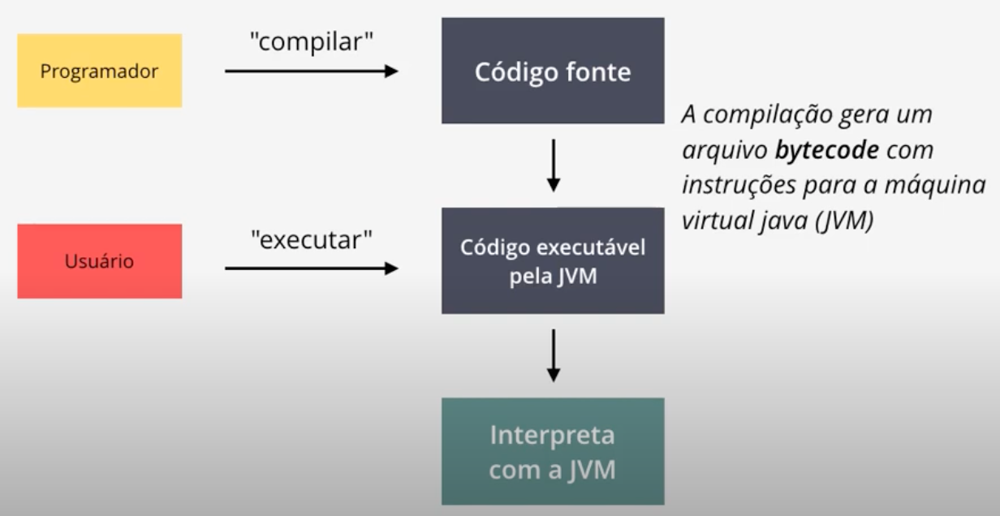

O que é 'Ciência da Computação'?
CCMP3056 Introdução à Computação C
Vamos conversar um pouco do que é Ciência da Computação e quais são os objetivos do curso.
Capítulo 0: Introdução
- 0.1 O papel dos algoritmos
- 0.2 As origens das máquinas de computação
- 0.3 A Ciência dos Algoritmos
- 0.4 Abstração
- 0.5 Um esboço do nosso estudo (disponível no livro-texto)
- 0.6 Repercussões Sociais
Terminologia
- Algoritmo: um conjunto de etapas que define como uma tarefa é realizada
- Programa: uma representação de um algoritmo
- Programação: O processo de desenvolvimento de um programa
- Software: programas e algoritmos
- Hardware: Equipamento
Figura 0.1 Um algoritmo para um truque de mágica

História dos Algoritmos
- O estudo de algoritmos era originalmente um assunto da matemática.
- Exemplos iniciais de algoritmos
- Algoritmo de divisão longa
- Algoritmo Euclidiano
- Teorema da Incompletude de Gödel: Alguns problemas não podem ser resolvidos por algoritmos.
Figura 0.2 O algoritmo Euclidiano

Origens das máquinas de computação
- Primeiros dispositivos de computação
- Ábaco: as posições das contas representam os números
- Máquinas baseadas em engrenagens (1600-1800)
- As posições das engrenagens representam números
- Blaise Pascal, Wilhelm Leibniz, Charles Babbage
Figura 0.3 Um ábaco
Armazenamento de dados antecipado
- Cartões perfurados
- Usado pela primeira vez em Jacquard Loom (1801) para armazenar padrões para tecidos de tecelagem
- Armazenamento de programas no mecanismo analítico de Babbage
- Popular na década de 1970
- Máquinas guiadas por engrenagens
Primeiros computadores
- Baseado em relés mecânicos
- 1940: Stibitz nos Laboratórios Bell
- 1944: Havard Mark I: Howard Aiken e IBM em Harvard
- Baseado em tubos de vácuo
- 1937-1941: Atanasoff-Berry no estado de Iowa
- Década de 1940: Colossus: decifrador secreto de códigos alemães
- Década de 1940: ENIAC: Mauchly \& Eckert na Universidade da Pensilvânia.
Figura 0.4 O computador Havard Mark I

Computadores pessoais
- Usado pela primeira vez por amadores
- A IBM lançou o PC em 1981.
- Aceito pelas empresas
- Tornou-se o design de hardware padrão para a maioria dos computadores desktop
- A maioria dos PCs usa software da Microsoft
Into the Millennia
- A Internet revolucionou as comunicações
- Rede mundial de computadores (World Wide Web)
- Mecanismos de buscas (Google, Yahoo e Microsoft)
- Miniaturização de máquinas de computação
- Embutido (GPS, em motores de automóveis)
- Smartphone
Ciência da Computação
- A ciência dos algoritmos
- Extrai de outros assuntos, incluindo
- Matemática
- Engenharia
- Psicologia
- Administração de Empresas
- Ciências naturais
- Arte (imagens, músicas)
- Esporte
Questões Centrais da Ciência da Computação
- Quais problemas podem ser resolvidos por processos algorítmicos?
- Como a descoberta de algoritmos pode ser facilitada?
- Como as técnicas de representação e comunicação de algoritmos podem ser aprimoradas?
- Como as características de diferentes algoritmos podem ser analisadas e comparadas?
- Como os algoritmos podem ser usados para manipular informações?
- Como os algoritmos podem ser aplicados para produzir comportamento inteligente?
- Como a aplicação de algoritmos afeta a sociedade?
Habilidades mais importantes
O cientista da Computação deve ser capaz de resolver problemas do mundo real, ou seja, apresentar uma estrutura lógico-matemática que possibilite a resolução de um problema, de forma computacional.
Habilidades básicas
- Interesse particular por matemática;
- Formular um problema do mundo real em termos computacionais;
- Elaborar uma solução para o problema, em termos computacionais:
- Algoritmo; -Escrever um programa, através de uma linguagem de programação;
- Testar o programa, a fim de verificar se este apresenta uma solução esperada e de forma correta.
Habilidades avançadas
- Gerenciar software (pequeno, médio e grande porte);
- Construir software para lidar com grandes quantidades de dados
- Big Data, Mineração, Aprendizagem de Máquina...
- Fazer parte de equipes de trabalho; e, em alguns momentos você deverá ser capaz de gerenciar essas equipes de trabalho;
- Comunicar-se com clientes e usuários para entender e resolver os problemas, dificuldades e necessidades apresentadas.
Habilidades de solucionar problemas
-
Habilidades de solucionar problemas
- Formular questões;
- Pensar criativamente para resolver os problemas;
- Expressar a solução de forma simples, clara e precisa.
-
O estudante deve aprender a programar, preferencialmente e várias linguagens.
Figura 0.5 O papel central dos algoritmos na ciência da computação

Abstração
- Abstração: a distinção entre as propriedades externas de uma entidade e os detalhes da composição interna da entidade
- Ferramenta abstrata: um ``componente'' que pode ser usado sem se preocupar com as propriedades internas do componente
Algoritmo
Uma lista de instruções para resolver um problema;
- Analisar o problema;
- Pesquisar sobre o problema;
- Criar um algoritmo genérico que resolva o problema;
- Escrever (através de uma linguagem de programação) um programa que resolva o problema;
- Testar o programa escrito para validar a solução, de forma precisa.
Linguagens de Progamação
- Linguagens formais, precisas, cujas instruções podem ser executadas por um computador.
- Linguagem de programação de baixo nível:
- Linguagem de máquina;
- Assembly (linguagem de montagem);
- Linguagem de alto nível:
- Python;
- Java;
- C/C++;
- JavaScript;
- Ruby;
- ...
- Linguagem de programação de baixo nível:
Linguagens interpretadas

Linguagens compiladas

Linguagens híbridas (interpretadas e compiladas)
Temos algumas linguagens de programação mais modernas, por exemplo, Java e Python.

Repercussões Sociais
- Os avanços na ciência da computação levantam novas questões.
- Na legislação: questões de direitos e responsabilidades
- No governo: questões de regulamentação
- No local de trabalho: questões sobre profissionalismo
- Na sociedade: questões sobre comportamento social
Teorias Éticas
- Baseado em consequências:
- O que leva ao maior benefício?
- Com base no dever:
- Quais são minhas obrigações intrínsecas?
- Com base em contrato:
- Que contratos devo honrar?
- Baseado em personagem:
- Quem eu quero ser?
Por onde começar?
Uma boa forma de iniciar o aprendizado em Computação:
- aprender a escrever códigos simples em uma linguagem de alto nível (Python);
- executar pequenos programas (ou scripts);
- aprender novos conceitos incrementalmente;
- aumentar a sofisticação e o tamanho dos programas progressivamente.